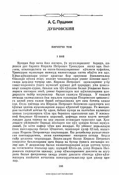

DBoy pomeshchik va kambag'al qo'shni o'rtasidagi ziddiyatli do'stlik va taqdir hikoyasi.
Asarda boy va zolim pomeshchik Kirila Petrovich Troekurov hamda uning kambag'al, ammo g'ururli qo'shnisi Andrey Gavrilovich Dubrovskiy o'rtasidagi murakkab munosabatlar tasvirlanadi. Do'stlik va ijtimoiy tengsizlik fonida yuz bergan voqealar qahramonlarning taqdirini tubdan o'zgartirib yuboradi.